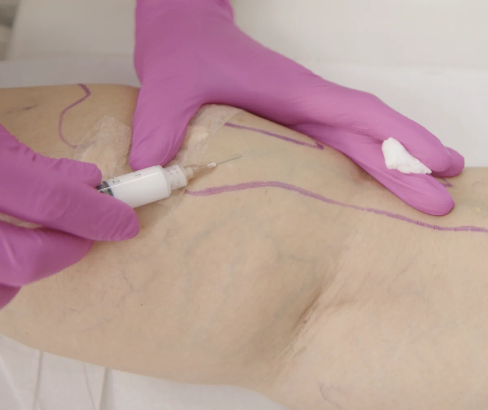
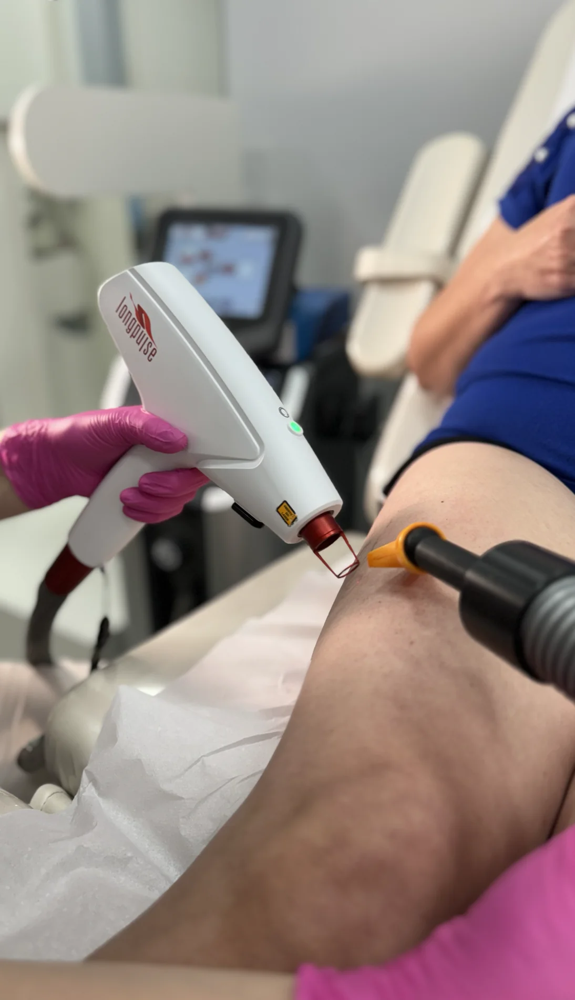
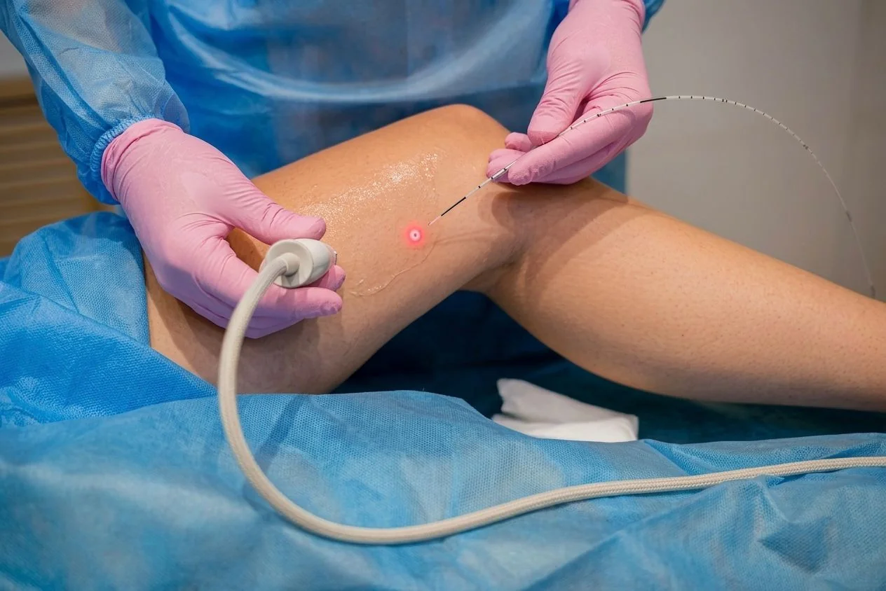

A escolha do tratamento depende do Doppler, do tipo de veia, do calibre e do que está por trás do que aparece na pele. Aqui, a indicação vem antes da técnica, sempre.
Indicada para telangiectasias e vasinhos muito finos, a escleroterapia com laser utiliza luz para destruir o vaso sem necessidade de agulha ou injeção. É um método preciso, com recuperação imediata e sem necessidade de afastamento das atividades. Os resultados surgem de forma gradual, à medida que os vasos são absorvidos pelo organismo. A indicação depende do diâmetro e da profundidade dos vasos, avaliados na consulta.


Técnica consagrada e amplamente estudada. Consiste na injeção de uma solução esclerosante diretamente dentro da veia, provocando sua obliteração. É indicada para vasinhos e varizes de pequeno calibre que não respondem ao laser ou que, pelo diâmetro, têm melhor resultado com injeção. A escolha da solução e da concentração depende do tipo de veia e é definida na avaliação clínica.
Utiliza polidocanol em forma de espuma, que ocupa o interior da veia com mais eficiência do que a solução líquida. É guiada por ultrassonografia em tempo real, o que garante precisão na aplicação e segurança no procedimento. Indicada para veias de maior calibre que não respondem ao laser, pode substituir a cirurgia em casos selecionados. A decisão sobre a indicação é feita após o Doppler venoso.


Desenvolvido para tratar as veias safenas — as veias tronco que, quando falham, alimentam as varizes visíveis. Uma fibra ótica é introduzida dentro da veia e o laser é acionado de dentro para fora, sem necessidade de cortes. O procedimento é realizado sob anestesia local, guiado por ultrassom, com retorno rápido às atividades. A indicação exige Doppler venoso que confirme o refluxo na safena e defina o segmento a ser tratado.
Em alguns casos, a indicação cirúrgica é a mais adequada para o resultado esperado. Varizes de grande calibre, casos com recidiva ou situações em que os procedimentos minimamente invasivos não são suficientes têm na cirurgia uma solução eficaz e definitiva.
Os procedimentos são realizados em ambiente hospitalar, com toda a estrutura necessária para segurança e precisão. Sou credenciada nos principais hospitais de referência da Grande São Paulo, incluindo Albert Einstein, Sírio-Libanês e Oswaldo Cruz. O tempo de recuperação varia conforme o caso e é discutido em detalhes na consulta pré-operatória.

Nenhum tratamento é escolhido antes da avaliação. Na consulta, faço o exame clínico, solicito o Doppler quando necessário e defino o melhor caminho para cada caso. Sem suposição, sem protocolo genérico.
Agendar via WhatsApp